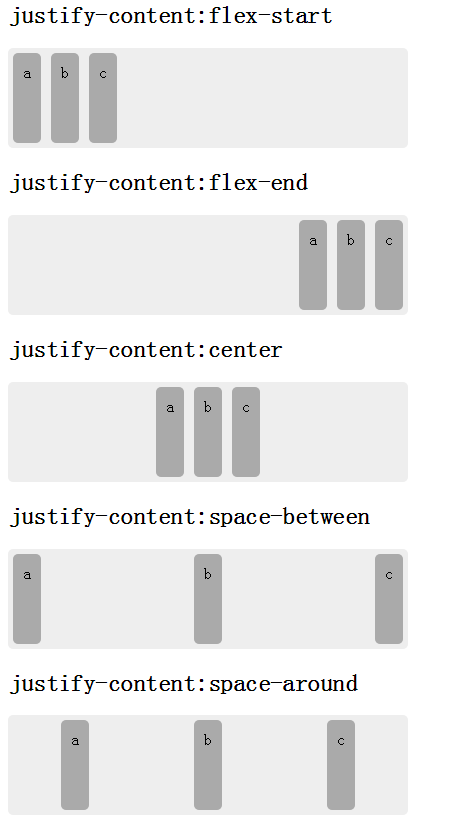

语法：
justify-content:取值
说明：
justify-content 设置或检索弹性盒子元素在主轴（横轴）方向上的对齐方式
| 属性值 | 说明 |
|---|---|
| flex-start | 弹性盒子元素将向行起始位置对齐。该行的第一个子元素的主起始位置的边界将与该行的主起始位置的边界对齐，同时所有后续的伸缩盒项目与其前一个项目对齐。 |
| flex-end | 弹性盒子元素将向行结束位置对齐。该行的第一个子元素的主结束位置的边界将与该行的主结束位置的边界对齐，同时所有后续的伸缩盒项目与其前一个项目对齐。 |
| center | 弹性盒子元素将向行中间位置对齐。该行的子元素将相互对齐并在行中居中对齐，同时第一个元素与行的主起始位置的边距等同与最后一个元素与行的主结束位置的边距（如果剩余空间是负数，则保持两端相等长度的溢出）。 |
| space-between | 弹性盒子元素会平均地分布在行里。如果最左边的剩余空间是负数，或该行只有一个子元素，则该值等效于'flex-start'。在其它情况下，第一个元素的边界与行的主起始位置的边界对齐，同时最后一个元素的边界与行的主结束位置的边距对齐，而剩余的伸缩盒项目则平均分布，并确保两两之间的空白空间相等。 |
| space-around | 弹性盒子元素会平均地分布在行里，两端保留子元素与子元素之间间距大小的一半。如果最左边的剩余空间是负数，或该行只有一个伸缩盒项目，则该值等效于'center'。在其它情况下，伸缩盒项目则平均分布，并确保两两之间的空白空间相等，同时第一个元素前的空间以及最后一个元素后的空间为其他空白空间的一半。 |
使用方法：
justify-content:flex-start; /*弹性盒子元素将向行起始位置对齐*/
兼容性：
- 浅绿 = 支持
- 红色 = 不支持
- 粉色 = 部分支持
| 支持版本\类型 | IE | Firefox | Safari | Chrome | Opera |
|---|---|---|---|---|---|
| 较早版本 | 6.0-10.0 | 4.0-19.0 | 5.1.7-6.0 | 21.0-28.0-webkit- | 9.5-12.0 |
| 较新版本 | 11.0 | 20.0 | 7.0-webkit- | 29.0 | 12.1 |
橘色说明要加浏览器的前缀
事例：
<ul id="box" class="box">
<li>a</li>
<li>b</li>
<li>c</li>
</ul>
.box{
display:-webkit-flex;
display:flex;
width:400px;height:100px;margin:0;padding:0;border-radius:5px;list-style:none;background-color:#eee;}
.box li{margin:5px;padding:10px;border-radius:5px;background:#aaa;text-align:center;}
#box{
-webkit-justify-content:flex-start;
justify-content:flex-start;
}
